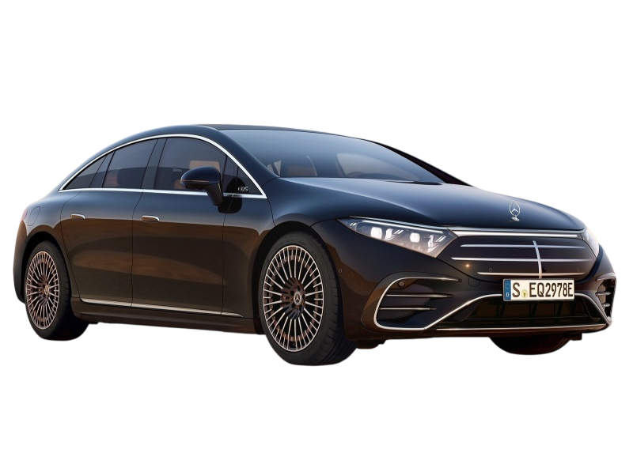
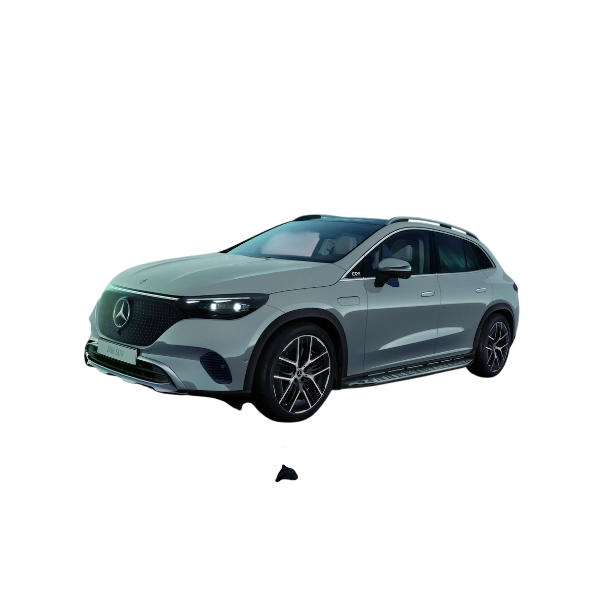
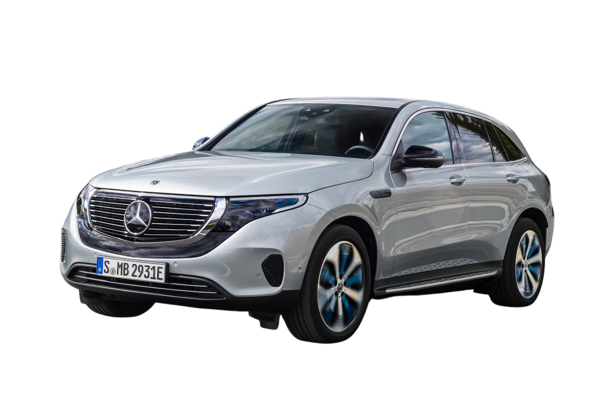
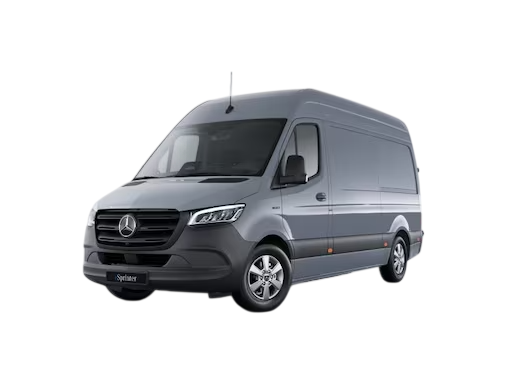

Mercedes-Benz a jeho cesta k bezemisní budoucnosti. Investice, modely a plány do roku 2030.
Jak Mercedes-Benz plánuje elektrifikaci svého portfolia
Mercedes-Benz investuje desítky miliard eur do elektrifikace celého portfolia. Značka EQ zastřešuje všechny plně elektrické modely. Cílem je stát se do roku 2030 „ready to go all-electric" — plně elektrickou značkou všude tam, kde to trh umožní.
Každý segment modelové řady dostane svůj elektrický protějšek — EQA pro kompaktní segment, EQC pro střední SUV, EQE pro střední třídu a EQS jako vlajkový elektrický sedan.
Elektrická obdoba S-Class. Dojezd až 770 km (WLTP), aerodynamický koeficient Cd 0,20 — nejnižší hodnota u sériového auta světa. MBUX Hyperscreen přes celou palubní desku. Dostupný také jako SUV — EQS SUV.

Elektrická obdoba E-Class. Dojezd přes 600 km, sdílí platformu MB.EA s dalšími elektrickými modely. Dostupný jako sedan i SUV. AMG verze EQE 53 AMG má přes 690 HP.

Kompaktní a středně velké elektrické SUV. EQA vychází z platformy GLA, EQC z GLC. Dojezd 350–500 km. Ideální pro každodenní provoz ve městě i na delší trasy.

Elektrické dodávky pro firemní zákazníky. eSprinter nabídne dojezd přes 300 km a je vhodný pro logistiku v městských oblastech. eCitan je kompaktnější alternativa pro dodávky na poslední míli.

Jak Mercedes-Benz přistupuje k životnímu prostředí
Továrna v Sindelfingen (Factory 56) funguje uhlíkově neutrálně od roku 2022. Solární panely na střeše, 100% obnovitelná energie, recyklace výrobního odpadu a uzavřený vodní okruh.
Použité baterie z elektromobilů dostávají druhý život jako stacionární energetická úložiště. Pomáhají vyrovnávat výkyvy ve spotřebě elektřiny v síti a přispívají k zásobování obnovitelnou energií.
Mercedes-Benz pracuje na využití recyklovaných materiálů v interiéru vozidel. Koberce z recyklovaného PET, dřevěné obklady z udržitelných zdrojů a snaha o snížení uhlíkové stopy celého životního cyklu vozidla.
„Vynálezce automobilu znovu vynalézá automobil." Elektrická éra neznamená kompromis — znamená více výkonu, více luxusu a méně emisí. — Ola Källenius, CEO Mercedes-Benz Group AG
| Model EQ | Dojezd (WLTP) | Výkon | Nabíjení DC |
|---|---|---|---|
| EQA 250 | 426 km | 187 HP | 100 kW |
| EQC 400 | 412 km | 402 HP | 110 kW |
| EQE 350 | 654 km | 288 HP | 170 kW |
| EQS 450+ | 770 km | 355 HP | 200 kW |